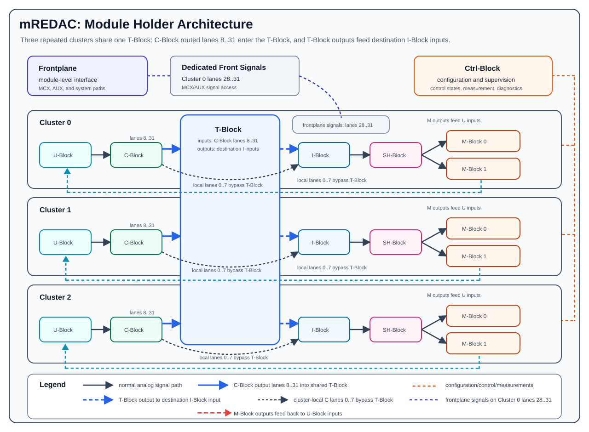
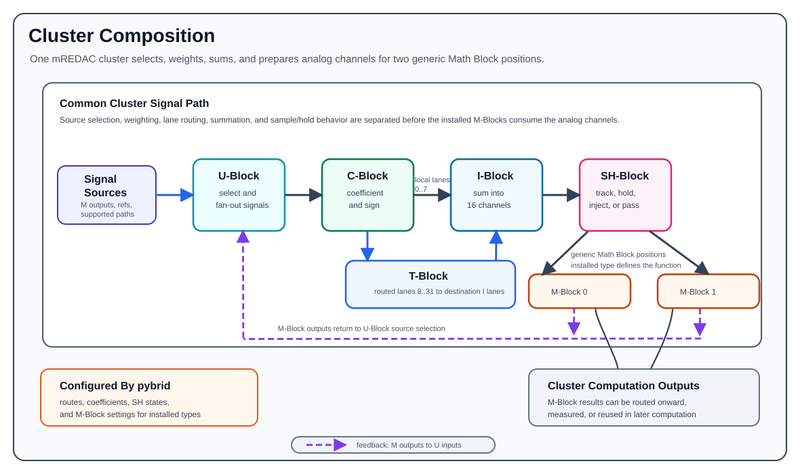

mREDAC¶
The mREDAC is the module-holder level assembly that combines the cluster-local computation blocks, the routing structure, the control interface, and dedicated front I/O connections into one configurable analog computing unit. It is not a single computation block. It is the carrier structure in which multiple blocks are installed and interconnected so that pybrid can configure an analog computation across routing, weighting, summation, sampling, mathematical operation, and control stages.
An mREDAC contains:
- 3 clusters.
- 1 T-Block for module-level routing.
- 1 Ctrl-Block for control, configuration, measurement, and coordination functions.
- A frontplane interface for external/module-level MCX, AUX, and system connections.
Each cluster contains:
- 1 U-Block.
- 1 C-Block.
- 1 I-Block.
- 1 SH-Block.
- 2 M-Block positions.
The important architectural idea is that an mREDAC is built by putting these blocks together in a fixed cluster structure while keeping the installed Math Blocks configurable. The U-Block, C-Block, I-Block, and SH-Block provide the common signal-preparation path of a cluster. The two M-Block positions provide the computation-specific part of the cluster and can be populated with different Math Block variants.
Architecture Overview¶
At documentation level, an mREDAC can be understood as three repeated analog computation clusters connected to a shared routing and control environment:

This diagram is simplified. The real hardware contains bidirectional routing, control buses, calibration paths, measurement paths, dedicated front I/O paths, and module infrastructure. The simplified view is useful because it shows the main computation structure: cluster-local sources are selected and weighted, selected lanes are either used locally or routed through the T-Block, the I-Block forms summed channels, and the SH-Block presents prepared analog values to the installed M-Block hardware.
Cluster Composition¶
Each mREDAC cluster is a local analog computation section. The cluster provides the path from selected sources to prepared computation inputs and then into the installed Math Blocks.
The common cluster path is shown below:

The blocks in this chain have different responsibilities:
- The U-Block participates in selecting and forwarding analog sources within the routing structure.
- The C-Block applies configurable coefficient and polarity behavior to routed signals.
- C-Block lanes
0..7are local same-cluster paths into the I-Block. - C-Block lanes
8..31use T-Block routing before reaching a destination I-Block. - The I-Block forms the summed input channels used by the cluster.
- The SH-Block provides sample-and-hold behavior, offset compensation, injection-oriented operation, and passthrough-oriented operation for those 16 channels.
- The M-Block positions provide the actual mathematical function installed for that cluster position.
The cluster should therefore not be described as one large monolithic circuit. It is a staged signal-processing path where source selection, weighting, lane routing, summation, sample/hold behavior, and mathematical computation are separated into different replaceable or configurable hardware blocks.
M-Block Positions¶
Each cluster has two M-Block positions. These positions are generic Math Block slots rather than one fixed function. Different M-Block variants can be installed, and future M-Block variants can be added without changing the basic mREDAC cluster concept.
For mREDAC-level documentation, the M-Blocks should be described generically:
- A cluster has two Math Block positions.
- The installed Math Block type determines the mathematical function available at that position.
- The surrounding cluster still provides the same signal-preparation path through U-Block, C-Block, I-Block, and SH-Block.
- pybrid configuration must match the M-Block type that is actually installed.
- M-Block-specific behavior belongs in the individual M-Block documentation pages, not in the mREDAC overview.
This generic description is important because the mREDAC module holder is designed to support multiple Math Block choices. An mREDAC cluster can therefore be documented as having two configurable computation positions, while each specific Math Block page documents the details of integrators, multipliers, MDR functions, or future computation modules.
Signal Flow¶
The high-level mREDAC signal flow is:
- M-Block outputs, reference sources, or supported external/lane sources are selected by the U-Block.
- The C-Block applies coefficient, weighting, and sign behavior.
- C-Block lanes
0..7pass locally to the same cluster I-Block. - C-Block lanes
8..31can be routed through the T-Block to the selected destination I-Block lane. - The I-Block sums the selected weighted contributions into 16 cluster-local analog channels.
- The SH-Block tracks, holds, compensates, injects, or passes those 16 channels according to the configured operating state.
- The prepared analog channels are presented to the installed M-Block positions.
- The M-Block outputs become computation results that can be routed onward, measured, or used in later stages of the analog computation.
Only lanes 8..31 participate in the mREDAC T-Block topology routing. Lanes 0..7 are local same-cluster C-Block-to-I-Block paths. The T-Block is lane-preserving: it selects which source sector drives a destination sector/lane, but it does not remap lane numbers.
This flow explains why the mREDAC is both a routing structure and a computation structure. The routing blocks decide which signals participate in the computation, while the cluster blocks prepare summed analog channel values for the installed mathematical hardware. When configured for hold behavior, the SH-Block can keep sampled values stable across computation phases.
T-Block Role¶
The T-Block is the mREDAC-level routing block for the routed lane portion of the analog topology. It connects routed C-Block output lanes to destination I-Block input lanes and participates in module-level interconnection where supported. In the mREDAC architecture, the T-Block should be understood as a routing block around the three clusters rather than as a mathematical computation block.
The T-Block supports:
- Selecting routed-lane sources for destination I-Block inputs.
- Forwarding cluster outputs to other destinations.
- Supporting the routing choices generated from the pybrid configuration.
The T-Block therefore gives the mREDAC its flexible interconnection behavior for routed lanes. The clusters provide the computation resources, while the T-Block determines how routed lane resources are connected between supported internal destinations. The frontplane is handled by separate front I/O circuitry associated with Cluster 0 lanes 28..31 where supported.
Ctrl-Block Role¶
The Ctrl-Block provides the control and supervision side of the mREDAC. It is not part of the main analog computation equation in the same way as the C-Block, I-Block, SH-Block, or M-Blocks. Instead, it supports configuration, status handling, measurement-oriented access, and coordination of the module-level hardware.
Typical Ctrl-Block responsibilities include:
- Receiving and applying configuration generated by pybrid.
- Coordinating digital control states of the installed blocks.
- Supporting calibration and measurement-oriented operations.
- Providing status and diagnostic access where supported by the hardware.
- Helping synchronize block behavior during configured computation phases.
The Ctrl-Block is therefore the management plane of the mREDAC, while the T-Block and clusters form the analog signal plane.
Frontplane Role¶
The frontplane is the mREDAC's external/module-level interface. It allows the mREDAC to participate in a larger REDAC system by carrying analog MCX, AUX, digital, and system connections between module-level hardware and the surrounding system infrastructure.
At mREDAC level, the frontplane should be described as:
- The external interface of the module-holder assembly.
- The connection point between the mREDAC and higher-level REDAC infrastructure.
- Dedicated front I/O paths for supported MCX/AUX signals and fixed-function digital/system signals.
- A supporting interface for system-level control and synchronization paths.
The frontplane is not a replacement for the cluster-local signal path and should not be read as a separate general-purpose routing matrix. In the documented mREDAC frontplane, the MCX/AUX connections are handled by dedicated front I/O circuitry. The analog-capable MCX paths are associated with specific high-numbered lane mappings, including the front/cluster lane range 28..31 where supported, with fixed-function digital modes where applicable. These paths provide external access points for selected module signals; they are not a direct input path into the T-Block. The T-Block and cluster blocks still determine how the normal routed lanes and computation signals are connected inside the mREDAC.
Programming with pybrid¶
In pybrid, one mREDAC is represented as a Carrier. The carrier contains three clusters and one local mREDAC T-Block:
Cluster indices are zero-based in pybrid. T-Block sectors are not the same numbering scheme: sector 0 is the backplane side, while sectors 1, 2, and 3 correspond to clusters 0, 1, and 2.
| Hardware endpoint | pybrid cluster index | T-Block sector |
|---|---|---|
| Backplane path | - | 0 |
| Cluster 0 | 0 |
1 |
| Cluster 1 | 1 |
2 |
| Cluster 2 | 2 |
3 |
Cluster-local setup¶
For same-cluster signal preparation, pybrid provides cluster.route(...) as a convenience function. It configures the cluster's U-Block, C-Block, and I-Block together:
This call means:
m_outselects the U-Block input source.u_outselects the U-/C-/I-lane used for the weighted contribution.c_factorconfigures the C-Block coefficient for that lane.m_inselects the I-Block output channel that feeds the prepared M-Block input side.
If u_out is in 0..7, the signal uses a local same-cluster C-Block-to-I-Block lane and bypasses the T-Block. If u_out is in 8..31, the lane belongs to the routed lane range, but cluster.route(...) still configures only that same cluster's U-Block, C-Block, and I-Block. For a non-local routed connection, prepare the source lane on the source cluster, configure the T-Block or router for the same lane number, and connect that lane on the destination cluster's I-Block to the desired M-Block input. Do not treat cluster.route(...) alone plus T-Block routing as a complete cross-cluster connection.
Routed lanes and T-Block lanes¶
Only cluster lanes 8..31 are routed through the mREDAC T-Block. Inside the T-Block, these 24 lanes are addressed as sector lanes 0..23:
For example, cluster lane 8 is T-Block sector lane 0, and cluster lane 31 is T-Block sector lane 23. The T-Block is lane-preserving. A source on cluster lane 20 can drive a destination on cluster lane 20; it is not a lane-number remapper.
Manual T-Block routing¶
The local mREDAC T-Block is available as carrier.tblock:
carrier.tblock.connect(src_sector, dst_sector, sector_lane)
source_sector = carrier.tblock.source(dst_sector, sector_lane)
carrier.tblock.reset()
To route cluster 0 lane 8 to cluster 1 lane 8 on the same mREDAC:
cluster_lane = 8
sector_lane = cluster_lane - 8
carrier.tblock.connect(src_sector=1, dst_sector=2, sector_lane=sector_lane)
To route cluster 0 lane 31 to the backplane side:
cluster_lane = 31
sector_lane = cluster_lane - 8
carrier.tblock.connect(src_sector=1, dst_sector=0, sector_lane=sector_lane)
To route from the backplane side into cluster 2 lane 16:
cluster_lane = 16
sector_lane = cluster_lane - 8
carrier.tblock.connect(src_sector=0, dst_sector=3, sector_lane=sector_lane)
Manual T-Block programming is useful for low-level tests and for understanding the hardware mapping. Higher-level pybrid routing should normally be preferred when configuring a complete computation, because it can keep local mREDAC T-Blocks and backplane routing resources consistent.
Router-based routing¶
The pybrid router uses Loc objects to describe source and destination lanes. The lane number must remain the same at source and destination for routed mREDAC paths:
from pybrid.redac.entities import Loc
from pybrid.redac.router import Router
router = Router()
router.add_carrier(carrier)
# For inter-carrier routes, add all relevant carriers to the same router.
src = Loc.new_lane(stack=0, carrier=0, cluster=0, id=20)
dst = Loc.new_lane(stack=0, carrier=0, cluster=2, id=20)
router.route(src, dst)
This assumes carrier and its routing blocks come from a pybrid hardware description or otherwise have valid location metadata. For inter-carrier routing, add all relevant carriers and backplane routing blocks to the router context before calling router.route(...).
For configuration that should be applied to real hardware, make sure the carrier model contains the physical routing blocks. If a carrier was constructed without valid location metadata or routing blocks, the router may update placeholder objects that help model the route but do not serialize into the intended hardware configuration.
This programs the local mREDAC T-Block so that cluster 0 sector data for lane 20 can feed cluster 2's destination lane 20. For inter-carrier routes, the same router.route(src, dst) call also uses the backplane routing resources when those blocks are present in the routing context.
The router enforces the same lane constraints as the hardware model:
- Lanes
0..7are local same-cluster lanes and are not general cross-cluster or backplane routes. - Lanes
8..31are the routed mREDAC lane range. - Routed source and destination lane numbers must match.
- Cluster indices must be in
0..2.
Frontplane lanes¶
The mREDAC frontplane's four analog-capable front signals are associated with Cluster 0 lanes 28..31. At the mREDAC programming level, treat these as fixed frontplane lane associations rather than as general T-Block inputs or outputs.
Frontplane mode selection is represented on the carrier by front_panel_io when supported by the connected hardware description:
from pybrid.redac.carrier import FrontPanelIOMode
carrier.front_panel_io = [
FrontPanelIOMode.ANALOG_IN,
FrontPanelIOMode.ANALOG_OUT,
FrontPanelIOMode.ANALOG_IN,
FrontPanelIOMode.ANALOG_OUT,
]
The four entries correspond to AUX 0..AUX 3 and to Cluster 0 lane associations 28, 29, 30, and 31. For analog use, direction is selected with ANALOG_IN or ANALOG_OUT. For digital use, DIGITAL_IN and DIGITAL_OUT must follow the fixed digital functions and directions documented for the frontplane; the enum does not make digital direction arbitrary.
Installed Math Blocks¶
Each cluster exposes two M-Block positions through cluster.m0block and cluster.m1block. The available configuration depends on the installed M-Block type. pybrid configuration must match the actual hardware, for example integrator, multiplier, or MDR variants. mREDAC-level routing and cluster setup prepare signals for these positions, while the M-Block-specific pages document each Math Block's computation API and lane mapping.